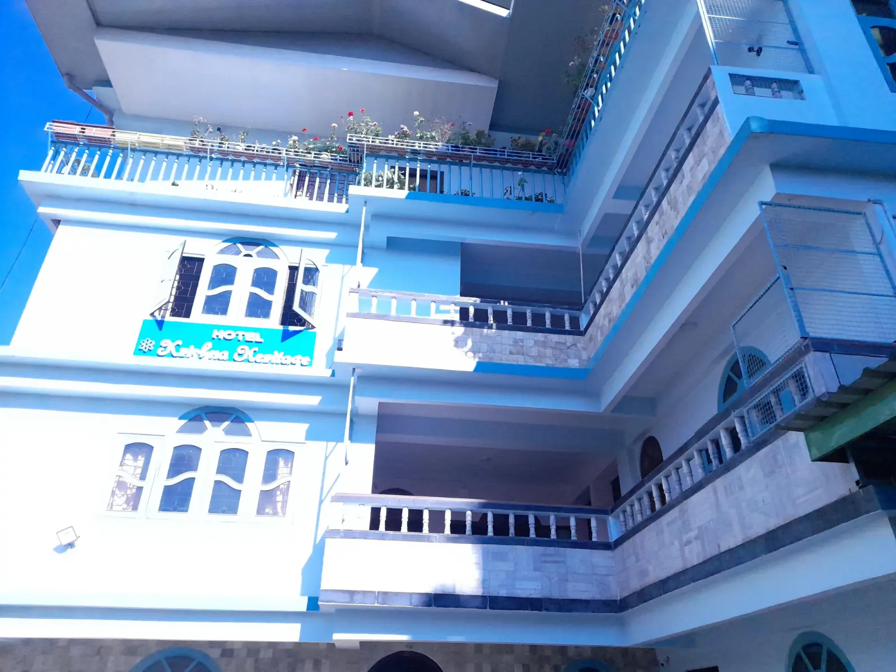
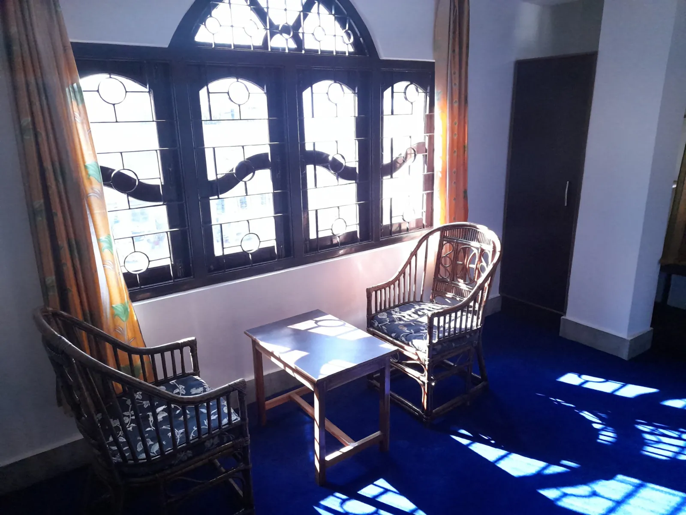
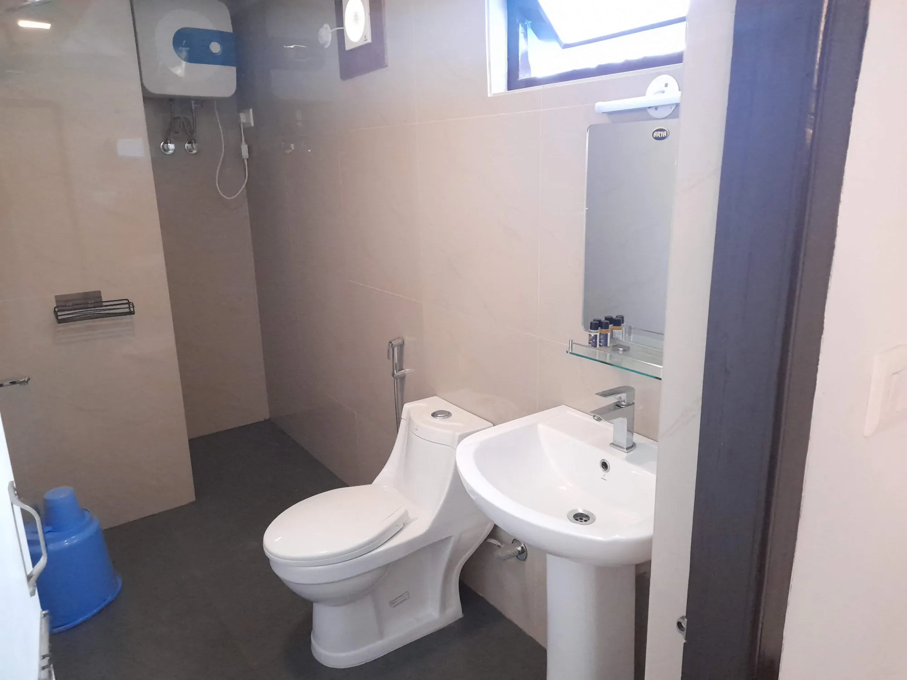
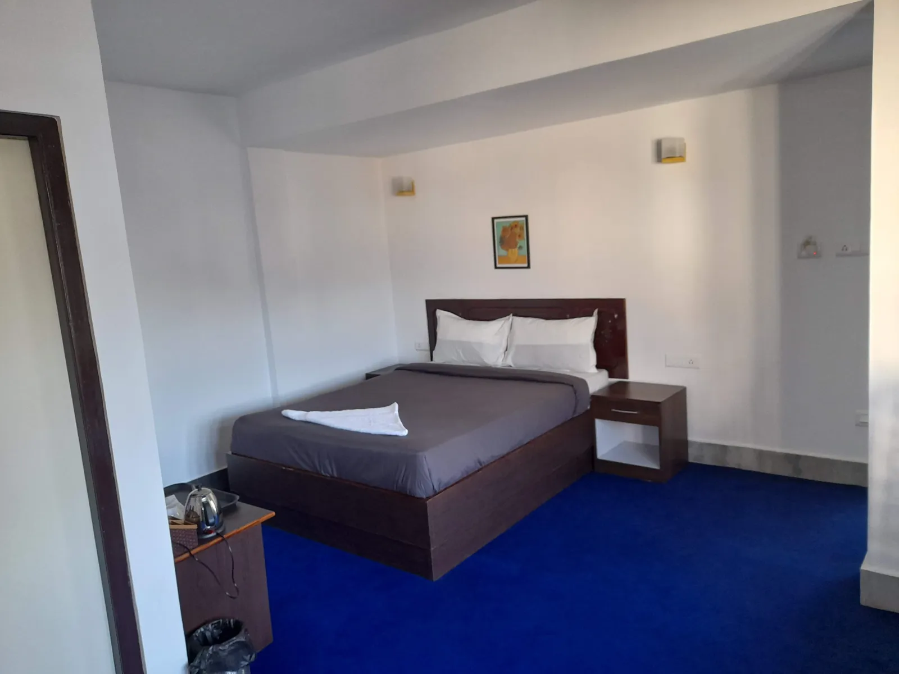

Hotel Krishna Heritage
Comfortable Stay in Gangtok
Experience warm hospitality and comfortable rooms at our hotel in Gangtok near MG Marg, offering a peaceful stay for travellers visiting Sikkim.
Book Your StayRooms & Tariff


Hotel Amenities
Free Wi-Fi
Parking Available
Meals Available
Daily Housekeeping
Comfortable Beds
Scenic Views
Family Friendly
Near MG Marg
Gallery











Frequently Asked Questions
Check-in is from 12:00 PM and check-out is before 11:00 AM.
Yes, we offer free WiFi to all our guest.
Yes, free parking is available (subject to availability) for guests staying at the hotel.
Yes, We offer long stays. Please contact the management on the subject
Breakfast is available on request and may be included depending on the room plan.
MG Marg is within 10 minutes by vehicle from hotel. Many guests stay with us while exploring Gangtok and nearby Himalayan attractions.
You can book a room by contacting us through WhatsApp or by calling the hotel directly. Advance payments can be made using UPI.
Popular places to visit near Gangtok include Tsomgo Lake, Nathula Pass, Rumtek Monastery and Banjhakri Falls. These attractions offer scenic views, cultural experiences and beautiful Himalayan landscapes.
Most visitors spend 2–3 days exploring Gangtok. This allows time to visit MG Marg, Tsomgo Lake, Nathula Pass and nearby monasteries.
In case of emergency, the following services are available:
- Police: 100
- Ambulance: 102
- Fire Service: 101
- National Emergency Helpline: 112
- Tourist helpline: 1363
Guests can also contact our reception for assistance at any time.
The nearest government hospital (STNM) is located in Sochakgang Sichey, Gangtok, within 15 minutes by vehicle from the hotel. Our staff can assist guests in arranging transportation if required.
Contact Us
Hotel Krishna Heritage
📍 Arithang, Gangtok, Sikkim
📞 Phone: +91 9832-454-668
💬 WhatsApp: Chat on WhatsApp
✉ Email: krishnaheritagehotel@gmail.com
Gangtok Travel Guide
Gangtok, the capital of Sikkim, is a beautiful Himalayan hill town known for its monasteries, scenic mountain views and vibrant culture. Visitors come to Gangtok to explore its peaceful monasteries, enjoy views of Kanchenjunga and experience the lively streets of MG Marg.
Top Attractions
Popular places include MG Marg, Tsomgo Lake, Nathula Pass, Rumtek Monastery and Banjhakri Falls.
Best Time to Visit
March to June and September to November are considered the best seasons for visiting Gangtok.
Local Experiences
Visitors enjoy local markets, Himalayan viewpoints, Buddhist monasteries and scenic mountain drives.
Quick Facts About Gangtok
Sikkim, India
About 1,650 meters (5,410 ft)
March–June and September–November
Monasteries, Himalayan views and MG Marg
Bagdogra International Airport (WB), about 123 km
New Jalpaiguri (NJP), about 120 km